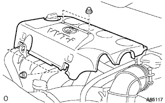
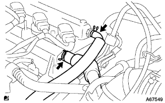
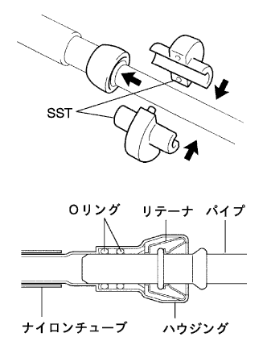
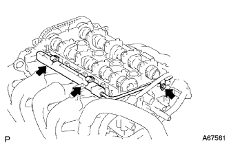

Fuel Injector ASSY removal |
| 1. Fuel leakage prevention work |
reference| 2. Remove the cylinder head cover No.2 |
|  |
Remove the four nuts and remove the Cylinder Hetted Cover No.2.
| 3. Cut the ventilation hose |
|  |
Remove the clip and separate the ventilation hose from the cylinder head cover.
| 4. Ventilation hose No.2 disconnected |
Remove the clip and ventilation hose from the cylinder head cover.Cut 2.
| 5. EFI fuel pipe clamp No.2 removed |
 |
EFI Fuuel Pipe Clamp No.2 is removed from Fuuelch Youve.
| 6. Fuel tube SUB-ASSY removed |
|  |
Use SST to separate the Fuuelchu Ubu.
| 7. Ignition coil No.1 |
Remove the connector and bolt of Ignitsushiyon coil and remove the entire Ignitsushiyon coil.
| 8. Cylinder head cover SUB-ASSY |
 |
Remove the bolts, nine and two nuts, and remove the cylinder head cover.
| 9. Fuel delivery pipe SUB-ASSY removed |
Cut the connector of the Fuuel Injector ASSY.
|  |
Remove the three bolts and remove the Fuuel Delivery pipe with the Fuuuel Injector ASSY.
Take off the delivery pipe spacer.
| 10. Delivery pipe spacer No.1 |
Delivery pipe spacer No.Remove 1 from the cylinder headdo.
| 11. Fuel Injector ASSY removes |
Remove the Fuuel Delivery Pipe from the Fuuel Injeova Shekta ASSY.